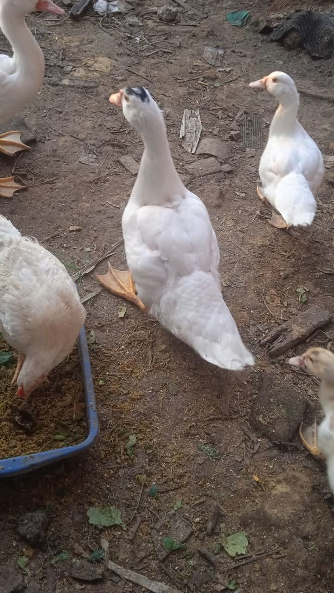

Selamat datang di IDC FARM. Kami menyediakan bibit serta hasil panen Lele dan Entok berkualitas tinggi dengan perawatan alami dan pakan pilihan.

IDC FARM berkomitmen menghadirkan pasokan lele segar dan entok sehat untuk kebutuhan konsumsi harian, rumah makan, warung pecel lele, hingga kebutuhan hajatan dan kemitraan.
Pakan Terkontrol
Panen Berkala
Kualitas Terjamin
Penyediaan lele siap konsumsi berbagai ukuran (isi 6, 8, 10 per kg) dengan daging gurih dan tidak berbau lumpur.
Menyediakan entok konsumsi jantan dan betina bobot tebal, cocok untuk kuliner rica-rica atau olahan lainnya.
Penjualan bibit lele (ukuran sortir rapi) dan anak entok (DOE) dengan tingkat daya tahan tubuh yang baik.
Menerima kerja sama pasokan rutin mingguan/harian untuk warung makan, restoran, dan pedagang pasar.
Lelenya segar banget, ukurannya seragam dan dagingnya manis gak bau lumpur. Langsung jadi langganan warung pecel lele saya.
Beli entok pedaging di IDC FARM bobotnya mantap, karkasnya bersih dan sehat. Pelayanan kirimnya juga cepat!
Bibit lele dari IDC FARM daya tahannya bagus banget, tingkat kematian saat ditebar sangat rendah.